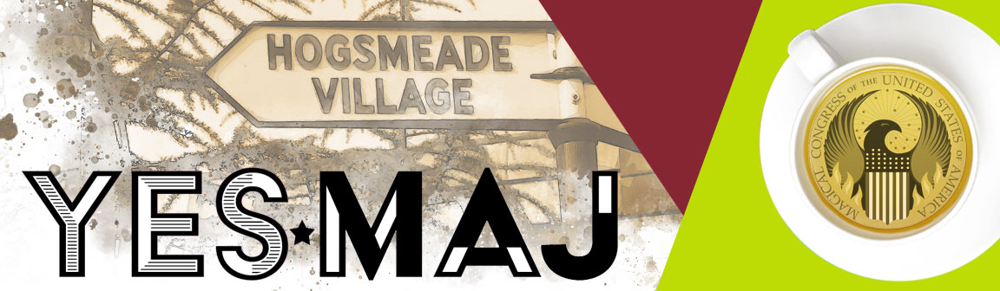

Magazine: YES☆MAJ
InDesign, Photoshop
Non-magical folk are "muggles" in the UK and "no-maj" in the US. The name YES☆MAJ was chosen to connect Harry Potter™ fans in North America to the British magical world. I based the magazine content on real clubs, events, and existing theme parks. Photos and activities are fully credited within the pages.
Magazine Title
According to the book and movie franchise, relationships between non-magical and magical people are forbidden. This magazine represents the breaking of the "Statute of Secrecy", the wizarding law instituted in 1689, so I wanted the title text to shout. I used Acier BAT, a strong typeface with interior and stroke options for flexibility in mixed cover images. The color blocking is variable to match cover color palettes.
Cover and Table of Contents
Back cover and Interior Spread: High Tea
Four Page Article: US Quidditch
This content is sourced from real players and clubs. There really are Quidditch teams in the US! Learn more at USQ.